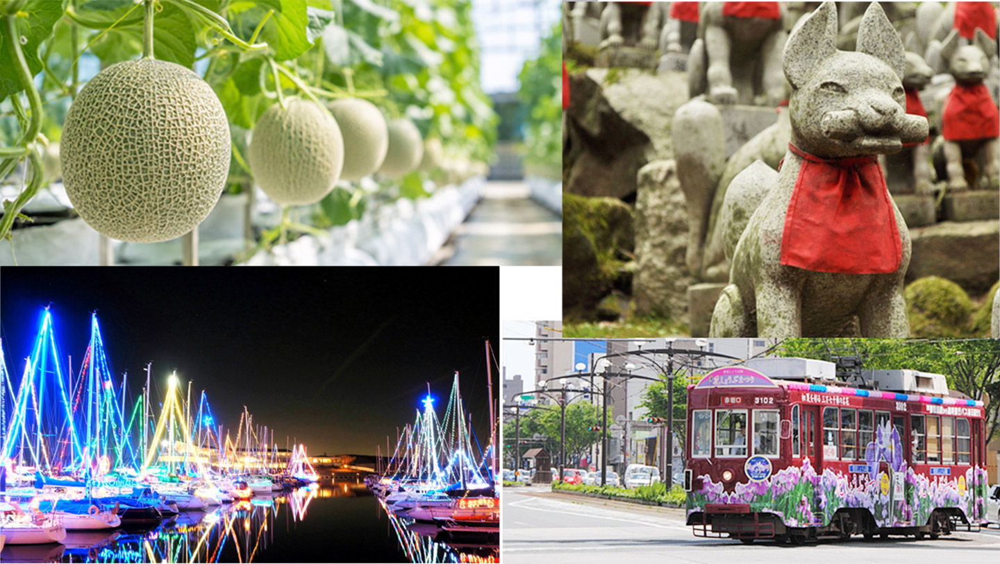
愛知県、東三河で見つけるわたし時間
愛知県の東側に広がる、海・山・温泉がぎゅっと詰まったエリア。
名古屋から少し足を延ばすだけで、こんな景色に出会える。
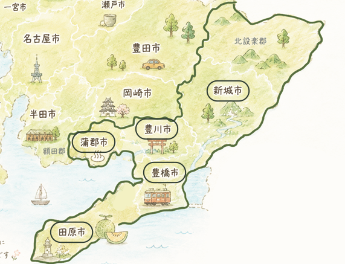
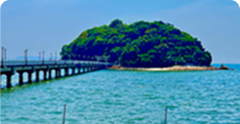
竹島を望む、海辺の温泉地
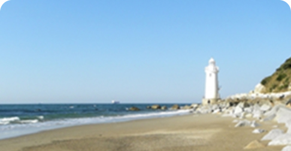
菜の花と海岸線が広がる、のどかな半島
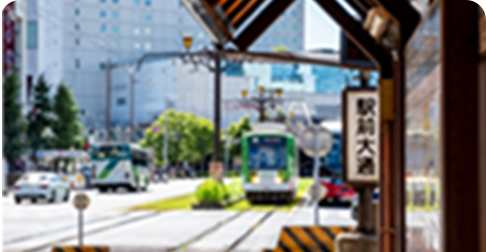
路面電車が走る、どこか懐かしい街
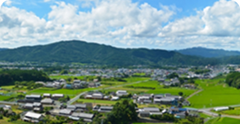
山と川に抱かれた、自然豊かな里
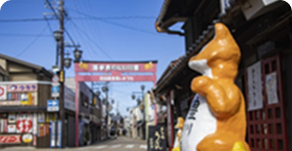
日本三大稲荷が見守る、祈りの町
泊まる、遊ぶ、食べる、見る。あなたに合う楽しみ方を見つけて。
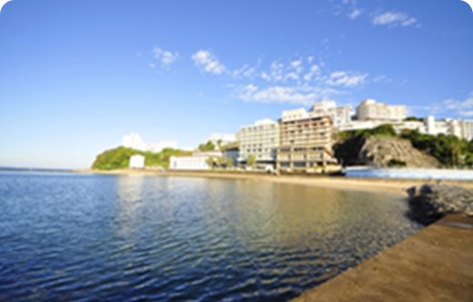
西浦温泉。波音を聞きながら、何もしない贅沢を。
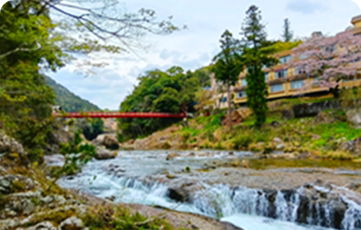
湯谷温泉。奥三河の自然に包まれて、湯に浸かるひとときを。
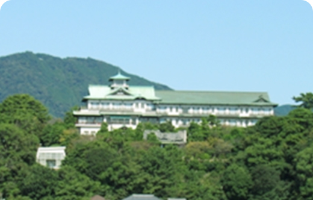
蒲郡クラシックホテル。非日常の雰囲気に、心もゆるむ。
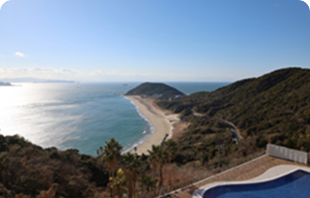
伊良湖の宿。波の音で目覚める、ちょっと贅沢な朝。
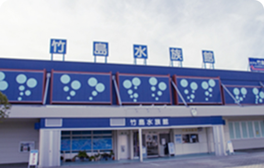
竹島・竹島水族館。駅から徒歩圏、気軽に楽しめる島時間。
恋路ヶ浜。波打ち際をのんびり歩くだけで満たされる。
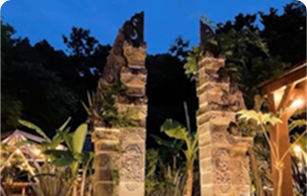
BASE CAMP KITI。自然の中で、いつもと違う一日を。
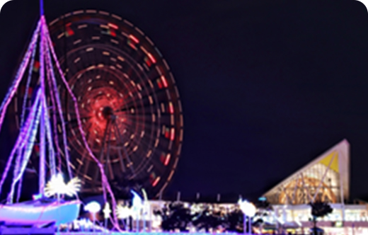
ラグーナテンボス。はしゃぐ日があってもいい。
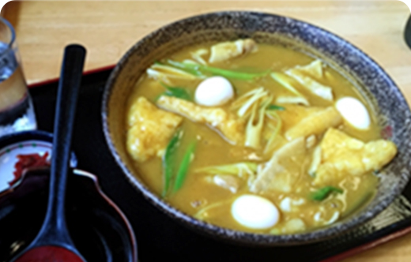
豊橋カレーうどん。一度は食べたい、豊橋のソウルフード。
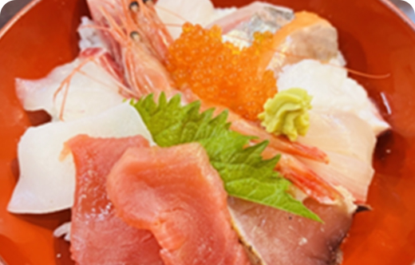
三河湾の海鮮丼。海の幸を、贅沢にひと皿で。
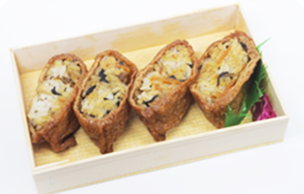
稲荷ずし。食べ歩きも、ゆる旅の楽しみのひとつ。
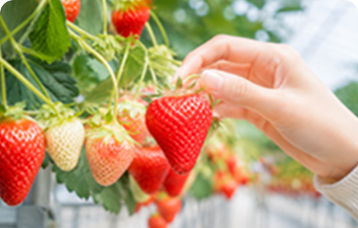
季節ごとに変わる、東三河のフルーツ狩り。
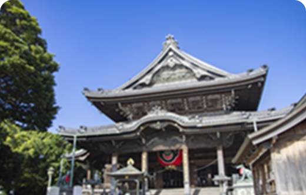
豊川稲荷。参道のお店めぐりも、あわせて楽しんで。
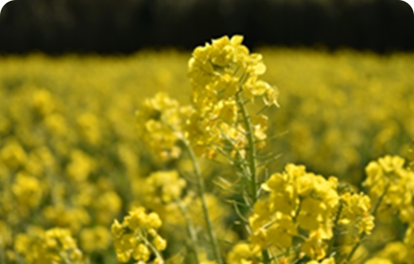
伊良湖菜の花ガーデン。200万本の黄色に、心が晴れる。
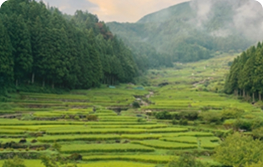
四谷の千枚田。昔ながらの景色に、時間を忘れる。
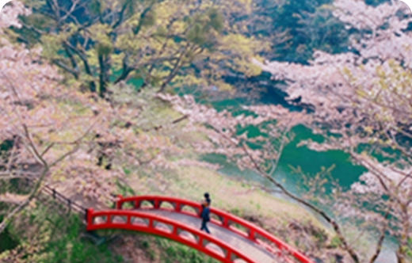
桜淵公園。春だけの特別な景色を、ゆっくりと。
日帰りでも、一泊でも。あなたのペースで巡る東三河。
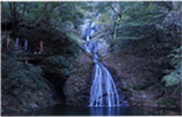
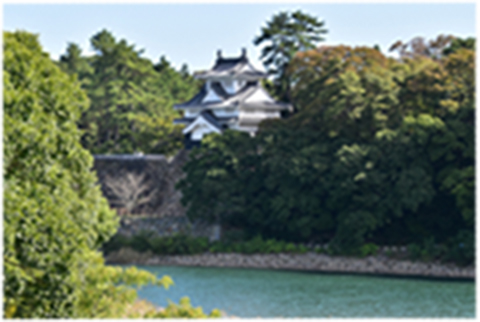
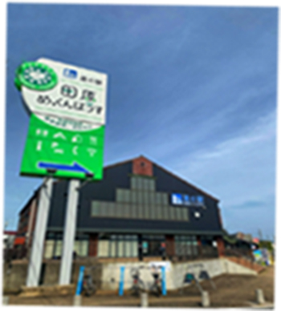
※所要時間はいずれも車移動の目安です。道路事情等により前後します。